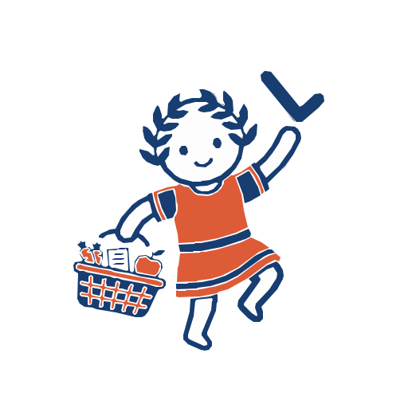

LARES.
Személyi asszisztens Androidra.
Feladatok, emlékeztetők, jegyzetek és projektek egy helyen.
LEGÚJABB ANDROID KIADÁS
Lares Android letöltése
A Lares ingyenesen letölthető APK-fájlként. A letöltés közvetlenül a hivatalos Lares GitHub-kiadásból történik.
⬇ Letöltés – Lares 3.0.2Android APK · Ingyenes · Google Play nélkül
Telepítés Androidon
- Nyomd meg a Letöltés gombot.
- A letöltés után nyisd meg az app-release.apk fájlt.
- Ha a telefon engedélyt kér, engedélyezd az alkalmazástelepítést annak a böngészőnek vagy fájlkezelőnek, amelyből megnyitottad.
- Erősítsd meg a telepítést, majd indítsd el a Lares alkalmazást.
A Lares nem a Google Play Áruházból települ. Az Android ezért külön megerősítést kérhet az APK telepítéséhez. Csak a hivatalos oldalról letöltött telepítőfájlt használd.
Frissítések
A Lares kiadásai ezen az oldalon követhetők. Az alkalmazás frissítési funkciója az új verzió elérhetőségét a közzétett verzióadatok alapján ellenőrzi; a telepítéshez az Android jóváhagyása szükséges lehet.